Plotting Surfaces with Hidden Line Meshes Brief Explanation
This tool plots the graph (surface) of a function defined by z = f(x, y) using a hidden line processed mesh (red lines : z $\ge$ 0, blue lines : z $<$ 0). When f(x, y) is given, you would typically investigate features like maxima, minima, or extremum points to study the general shape of the function. However, I created this tool thinking it would be convenient if you could intuitively grasp the shape when wondering, "What shape does this function have?" Since projecting a 3D surface onto a 2D plane makes it very difficult to understand without hidden line processing (See Footnote), I made efforts to determine which lines are visible and which are not from the viewpoint. However, sometimes lines that should be invisible might still appear, which is a challenge to address in the future.
You can select a function from the select box at the top right of the drawing window, and press [Start] button to render the surface. Moving the sliders on the right and bottom of the drawing window with the mouse will rotate the surface by shifting the viewpoint. The right slider controls vertical movement, and the bottom slider controls horizontal movement.
(The drawing page uses Local Storage. See Footnote)
[Ⅰ] About the screen: A quick summary
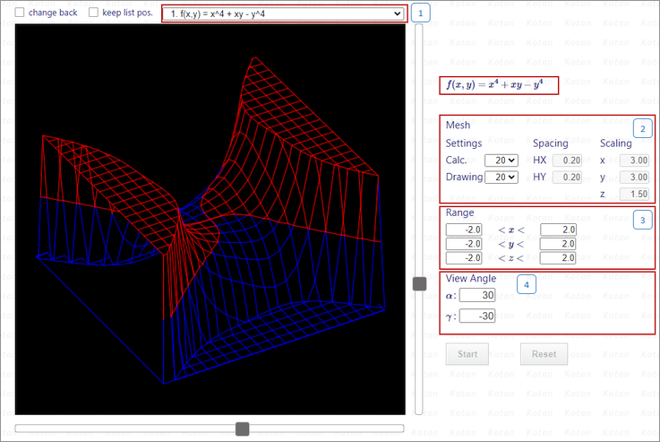
Select the function you'ld like to plot from the select box. Although it is divided into several sections, I will explain this later. Once a function is selected, its formula will be displayed at the top right of the screen. Pressing [start] button will plot the surface.
Set the number of lines used for drawing. "Calc." refers to the number of lines used for calculation. "Drawing" refers to the number of lines actually drawn. Increasing the number of lines makes the mesh denser and the surface smoother, but it also increases the computational load, which may cause choppy movements when rotating the rendered surface. The initial value for both "Calc." and "Drawing" is 20. *note
"Drawing" can be set to the same number of lines as selected in "Calc." or the number of lines like 1/2, 1/4, etc in "Calc.".
After changes, press the [Start] button to redraw the surface.
"Spacing" and "Scaling" are display-only fields and cannot be input or selected. "Scaling" refers to the enlargement (reduction) rate of the drawing range relative to a box (x / y: 12, z: 6) that encloses the surface in 3D space.
Set the drawing range for x, y, and z axes.
The input boxes are text boxes, so you should directly enter numerical values to change them. The default range is -2 to 2 for x, y, and z. *note
After changes, press [Start] button to redraw the surface.
For the z-axis, if the function's values exceed the range, a plane parallel to the x-y plane will be drawn. To make the boundaries clearer, contour lines are drawn at three points: z : max, 0, min. When the gamma angle (vertical viewpoint) is set to 90 or -90 degrees the implicit function's graph will be drawn.
"$\alpha$" sets the horizontal angle (around the z-axis) of the viewpoint. "$\gamma$" sets the vertical angle (downward [-] / upward [+]) of the viewpoint. Although you can directly enter numerical values in the text boxes, the right slider of the drawing window corresponds to "$\alpha$" and the bottom slider corresponds to "$\gamma$", so moving the sliders will display the respective angles. The default is "$\alpha$" : 30 degrees and "$\gamma$" : -30 degrees. *Note
After changes, press [Start] button to redraw the surface.
Moving the sliders enables the [Reset] button. Pressing the button resets "Angle" to the default values. Changes made to "Mesh" and "Range will be retained.
*note :
Depending on the selected function, different values might be set.[Ⅱ] About the Functions (Surfaces) Selectable in the Select Box: A quick summary
Functions that have been incrementally added are stocked here. Smooth surfaces should not pose any problems, but for discontinuous surfaces (e.g., functions defined by fractions where the denominator may become 0), division by zero might occur. In such cases, we handle them according to the following rules based on JavaScript's specifications.
| Positive real number / 0.0 | -> | Infinity (specification) | -> | 9999.0 |
| Negative real number / 0.0 | -> | -Infinity(specification) | -> | -9999.0 |
| 0.0 / 0.0 | -> | Nan(specification) | -> | 0.0 |
-
$ f(x, y) = |\sin(\omega)|, \omega = x + iy $
Let $ \omega = x + iy $From $ \sin(\omega) = \sin x \cosh y + i \cos x \sinh y $
$ |\sin(\omega)| = \sqrt{\sin^2 x \cosh^2 y + \cos^2 x \sinh^2 y} $
The actual calculations use the expression on the right-hand side of $ |\sin(\omega)| $. The x-axis corresponds to the real part, and the y-axis corresponds to the imaginary part. When plotting the absolute value of a complex function under "User Defined" described later, you need to define an expression where the imaginary unit $i$ is eliminated, like on the right-hand side of $ |\sin(\omega)| $. By the way, although the background of the thumbnail indicating the surface shape is white, I will explain this later.
-
$ f(x, y) = |\cos(\omega)|, \omega = x + iy $
Let $ \omega = x + iy $From $ \cos(\omega) = \cos x \cosh y + i \sin x \sinh y $
$ |\cos(\omega)| = \sqrt{\cos^2 x \cosh^2 y + \sin^2 x \sinh^2 y} $
Let's also mention $\cos$. The actual calculation of $\cos$ uses the expression on the right hand side of $|\cos(\omega)| $. The x-axis corresponds to the real part, and the y-axis corresponds to the imaginary part.
-
$ f(x, y) = |Γ(\omega)|, \omega = x + iy $
Gamma function$ |\Gamma(x + iy)| = |\Gamma(x)| / \prod \sqrt{1 + (y / (n + x))^2}, \quad n:0～∞ $
The actual calculation used the right-hand side of $ |\Gamma(x + iy)| $, approximating up to $ n $ 15. The x-axis corresponds to the real part, and the y-axis corresponds to the imaginary part. The reason $n$ was set to 15 is that I got lazy with entering the formulas halfway through, and when I tried rendering the graph, it looks decent enough, so I called it good. I wanted to try rendering a gamma function graph once.
The functions introduced here are ones where the solution trajectories become "implicit functions" in "Differential Equations: Plotting Trajectory of Solutions". "Cassini Oval" includes parameters $a$ and $b$ in the function's coefficients. The input boxes for these parameters are displayed below the formula. I have a little greedy prepared six parameters, from $a$ to $f$. However, the functions introduced this time only use $a$ and $b$, so the remaining parameters are disabled. I plan to keep these as spares in case I find any interesting functions in the future that require three or more parameters.
Cassini Oval
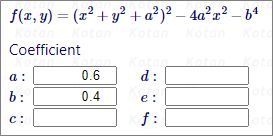
You can change the values of $a$ and $b$ in various ways.
-
Cassini Oval
$ f(x, y) = (x^2 + y^2 + a^2)^2 - 4a^2x^2 - b^4 $
Parameters (Default) : $ a = 0.6, b =0.4 $
The implicit function is $ (x^2 + y^2 + a^2)^2 - 4a^2x^2 - b^4 = 0 $.
When you fix the parameter $a$ at 0.6 and vary $b$ as 0.4, 0.6, and 0.8 to render the surface, the contour shown at $ z = 0 $ (the x-y plane) matches the graph of the implicit function.
When you move your mouse cursor near the coefficient input box, up and down arrows like a spin button will appear, but it's easier to input the values directly, such as "0.6".
The 3D plot can be difficult to understand, so try moving the slider until the "$\gamma$" reaches $ \pm 90$. I think the purpose curves(contour lines) have been plotting.
$a$ $b$ Curve Features Graph Outline 0.6 0.4 Two closed curves
symmetrical around the origin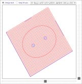 0.6 0.6 Curve through the origin 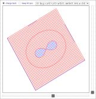 0.6 0.8 Ellipse-like curve 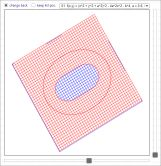 When $ a = b $, the curve is called a Lemniscate. In this case, the curve with $ a = 0.6, \quad b = 0.6 $ is the Lemniscate.
-
Example of a surface that reflects the periodicity of trigonometric functions
$ f(x,y) = \cos(y) - \cos(x) $When I looked at this surface first time, I am reminded of a wavy sponge used in the kitchen. If this surface is cut at $z = \alpha$, the contour matches the graph of solution trajectory plotted in "Differential Equations: Plotting Trajectory of Solutions 4-12".
Unlike "Cassini Oval", there are no changeable parameters in this example, but by changing the Max and Min values of the "Range" - z, you can reproduce the graph of the "implicit function". The thumbnail on the right shows the graph viewed from just above when $ z = \pm 1$.
[99] User-Defined
When you click "to Plot" (or the picture avobe that), the following screen will be displayed. You can enter any function and check its surface. When you press [Start] button, the formula you entered will be displayed in TeX format below the input box, and drawing will begin. The evaluation of the entered formula uses Math.js. If an error message is displayed, please check and correct the equation you entered as needed.
* You cannot include parameters like $a$ or $b$ in the formula you enter. Enter a direct value such as "2" or "-3" for the coefficient.
* For discontinuous surfaces (such as when the denominator of a function defined as a fraction can be 0), the $z$ value is adjusted according to the Javascript specifications, so there is no need to any special diviside into cases.
Below are some examples of input.
$ f(x, y) = x^3 -3xy + y^3 \quad $ (The contour at $ z = 0 $ corresponds to the "Folium of Descartes")
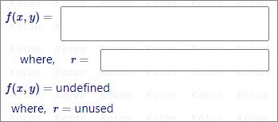
Enter the function you want to plot in the input box to the right of "$ f(x, y) = $".
As for the input box to the right of "where, $r = $," it will be explained later, but there is no need to enter anything now.
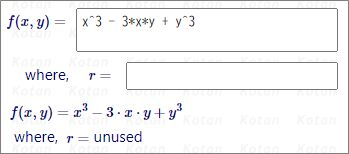
There are some rules for entering formulas, so I'll summarize them briefly here.
-
Four arithmetic operations
Use "+", "-", "*", "/" in the formula. Pay special attention to the use of "*". In the example formula, you might want to write "x^3 - 3xy + y^3," but "3xy" will not be evaluated as a mathematical expression, resulting in an error. Please enter "x^3 - 3*x*y + y^3."
-
Exponentiation
Various inputs are possible for Exponentiation, but for simplicity, "x^2" is sufficient. Of course, "x*x" is also acceptable. For squares, "x*x" is fine, but for higher powers like the 4th or 5th, "x^4" or similar is easier to enter and verify.
You can also use pow(). For example, "pow(x^2 + y^2, 2)" will be displayed as $(x^2 + y^2)^2$ in TeX, which looks natural. However, if you enter "pow(x, 5)," it will display as $(x)^5$. The calculation will be correct, but if it feels odd, you can enter "x^5" simply.
-
Mathematical Functions
Since math.js is used to parse the input formula, mathematical functions like sin(), cos(), log(), and abs(), including pow(), can be entered as-is.
Regarding exponential function, "e^x" is evaluated as $e^x$. If you enter "exp(x)," it will display as $\exp(x)$ in TeX but will be evaluated the same way. For complex functions, enclose them in parentheses like "e^(x + 1)" or "exp(x + 1)".
-
Entering Long Formula 1
If the formula is long, you can wrap it as shown below. The evaluated formula in TeX may also be displayed wrapped. (The wrapping process is not very good, and sometimes long formulas are not wrapped, which may cause the layout of the screen to break. Although the calculation is not affected, it becomes very difficult to see. Since the purpose is to enter a function and quickly check the graph, it's better not to input long equations unless necessary. (I plan to review this problem when I have time... I think so. )
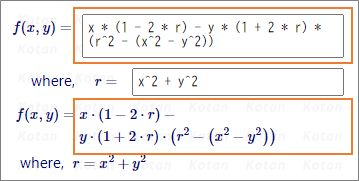
-
Entering Long Formula 2
When part of an formula is repeated, you can enter that in the "where, $r = $" input box and replace the repeated part with "r" to save input effort. If not needed, you don't have to enter anything.
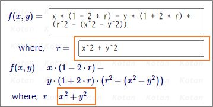
Below are some samples input:
-
Function shown in the example of input
$ x^3 - 3*x*y + y^3 $
-
Function shown in long formula
$ x * (1 - 2 * r) - y * (1 + 2 * r) * (r^2 - (x^2 - y^2)) \quad $ where, $ \; r= x^2 + y^2 $
== Footnote ==
[1.]
Difference in vision of surfaces projected onto 2D with and without hidden line processing:
-
Case with hidden line processing
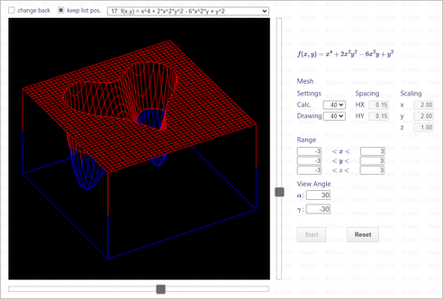
-
Case without hidden line processing
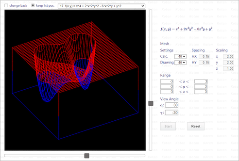
[2.]
This page uses Local Storage to retain the data below 2 points:
-
The position of the selected list in the select box
-
The background color of the drawing window
As for the first point, since there are a considerable number of selectable items, it is tedious to go from the top list to the desired list each time when the browser's refresh button is pressed or when the page is closed and then reopened. Therefore, I have added a checkbox to retain the position of the selected list, as shown below.
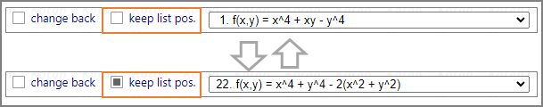
When you check the box and select a specific item, the check box status and the number of the selected list will be saved in Local Storage. Even if you click the browser's refresh button or close the page, the data will be saved, so the page will open in the state of the desired item selected.
However, if you uncheck this box, the data stored in the Local Storage will be deleted along with the key, so if you press the browser's refresh button or close and reopen the page, the top of the list will return to being selected.
The data (key, value) stored in Local Storage includes the following 2 points:
| key | value |
|---|---|
| kzPers_StorageFlg | true |
| kzPers_SelectedType | a five-character string, such as "09&09" |
The second point relates to the background of the thumbnails (drawn surface) used on this page. Did you notice that the thumbnails have either a black or white background?
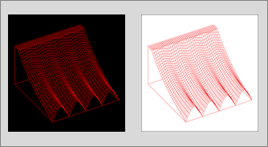
Personally,I think the black background easier to see, but I realized that on smaller screens, the lines blend into the black background, making it quite difficult to see. Therefore, a checkbox has been added to switch the background between black and white, as shown below. By default, the checkbox is unchecked, and the background is black. When you check the box, the background changes to white.
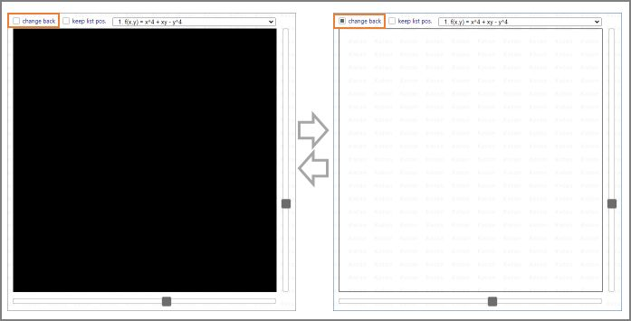
Once you've checked the box, click your browser's refresh button. The background color setting will be saved to Local Storage, and the background of the drawing window will switch to white.
In the same way as the first point, if you uncheck the box, the data stored in Local Storage will be deleted along with the key, so when the browser's refresh button is clicked or the page is reopened after closing it, the background of the drawing window will revert to black.
The data (key, value) stored in Local Storage includes the following 2 points:
| key | value |
|---|---|
| kzPers_Storage2Flg | true |
| kzPers_BackColor | rgb(255,255,255) |
The data stored in Local Storage can be checked from your browser's settings screen. Back